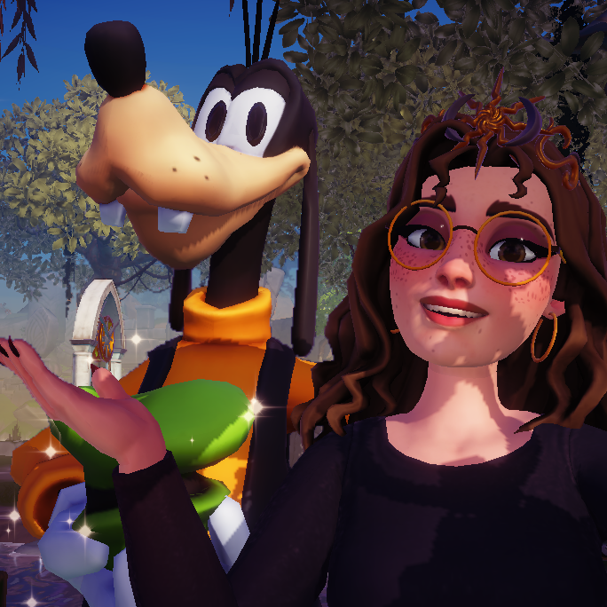

In Disney Dreamlight Valley, cooking is an essential skill. You'll need to cook for quests, and you'll want to have a couple meals on you when you're out and about to charge up your energy. It's important to constantly be expanding the number of recipes you know. To get you started, here are some of my favorite recipes in the game:

In Disney Dreamlight Valley, "friendship" is one of the most important mechanics in the game, and it's important to know about from the beginning. When you reach level 2 friendship with a character, you'll be able to assign them a skill-either farming, foraging, fishing, digging, or mining.
When you hang out with a friend with a certain skill, you get extra friendship points with that character when you do something related to that skill. For example, I set Mickey Mouse's skill to farming, so when I hang out with him and harvest crops, he gets extra friendship points.
If you're doing anything in the game, take a friend with you! Preferably a friend with that specific skill, but taking any friend along while you do chores or catch fish will increase their friendship level, and increasing friendship levels unlocks things like new furniture, clothing, and more quests!